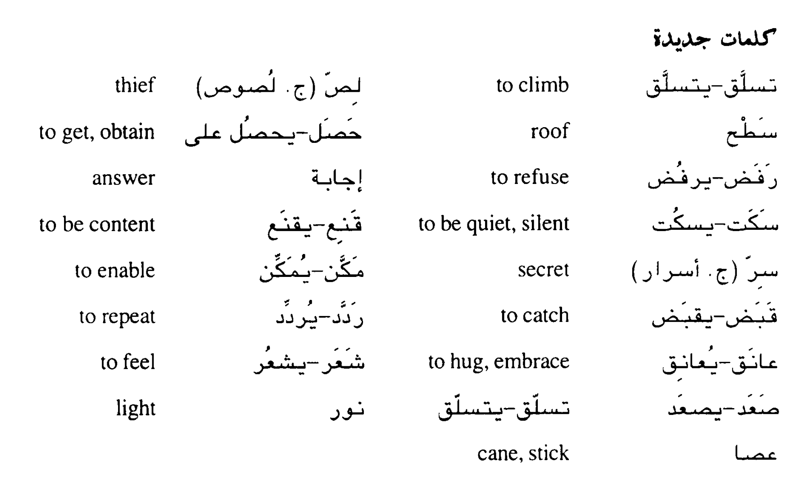

للص و شعاع النور
The Thieves and Rays of light
في ليله من الليالي تسلقت جماعة من اللصوص بيت رجل غني. ، فاستيقظ الرجل وأيقظ زوجته وقال لها: هناك لصوص على سطح البيت
يريدون دخوله، فاسا ليني بصوت يسمعونه كيف حصلت على مالي الكثير وأصبحت غنيأ، وإذا رفضت الإجابة استمري في السؤال حتى
أقول لك.
فعلت الزوجة ما طلب منها زوجها وسألته واللصوص يسمعون، فقال الرجل: اسكتي، إن الله أعطانا هذا المال ويجب علينا أن نقنع
بما أعطانا الله ولا تسألي أسئلة كثيرة. ثم سألته مرة ثانية: ولكن كيف حصلت على ذلك المال؟ فرد الزوج: أخاف اذا قلت لك
أن يسمعني ا لناس، و أنا لا أريد أن يعرف أحد سري. فقالت الزوجة: و لكن من يسمع كلامنا في منتصف الليل، والناس نائمون في
بيوتهم؟
قال الرجل: كنت لصا وجمعت كل مالي بالسرقة. قالت الزوجة: وكيف كان ذلك؟ قال الزوج: كنت اعرف سرا لا يعرفه أحد غيري، وذلك
مكنني من ا لسرقة بسهولة دون أن يقبض على أحد. قالت الزوجة: وما ذلك السر؟ قال الرجل: كنت اذهب في الليالي المقمرة مع
اصحابي و نتسلق بيوت الأغنياء ونبحث عن الفتحة التي يدخل منها النور الى البيت، وعندما نجدها كنت أردد كلمة شولم سبع
مرات دون أن يسمعني أحد، ثم أعانق ا لنور وأنزل إلى البيت ولا يشعر أحد بنزولي، ثم أسرق كل ما أريد وأقول شولم سبع مرات
وأعانق النور مرة ثانية و اصعد الى السطح وأهرب مع اصحابي بسلام. ثم سكت الرجل وزوجته.
عندما سمع ا للصوص ذلك قالوا: سنسرق الليلة كل ما نريد من المال. ثم انتظروا حتى ظنوا أن الرجل وزوجته نائمان، فذهب
رئيسهم الى فتحة وقال شولم سبع مرات ثم عانق النور ونزل إلى أرض البيت فوقع مقلوبا . فهجم عليه الرجل الغني وضربه بعصاه
، وقال له: من أنت؟ فرد السارق: المخدوع الذي صدق ما لا يمكن تصديقه
